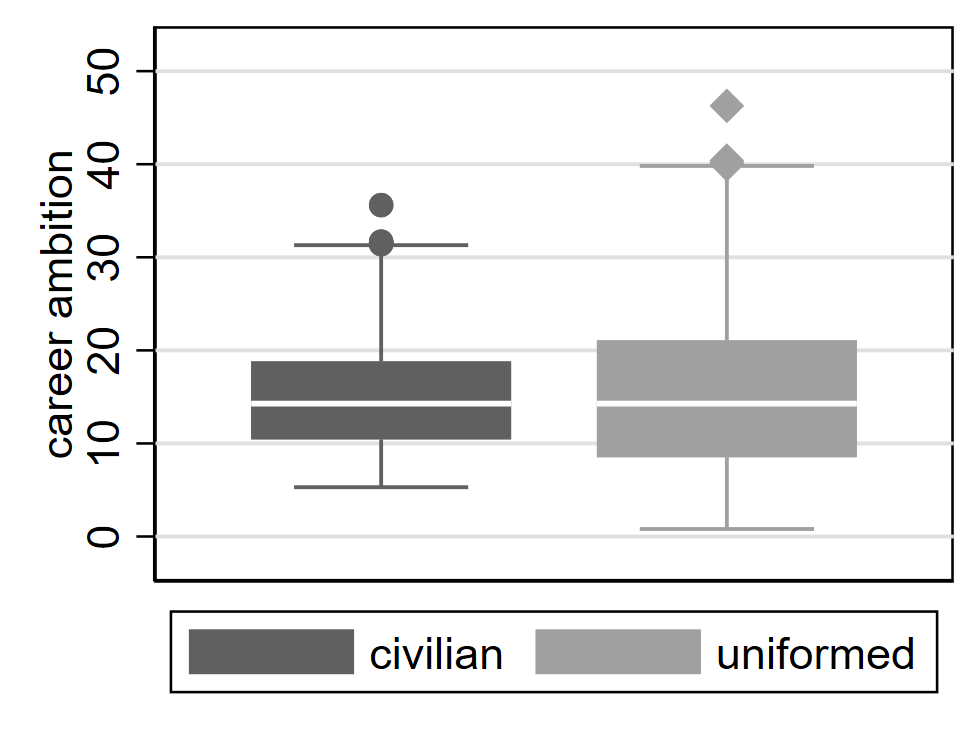

4 Relationships with Qualitative Variables
The way that we study relationships among variables depends on the types of variables we are examining—specifically whether they are quantitative or qualitative. In the prior chapter, we learned about how to describe the relationship (or association) between two quantitative variables. In this chapter, we will consider the case when one or both variables are qualitative.
Where do ordinal variables fit into this discussion? For many types of analysis, ordinal variables can be treated as either qualitative (for maximum flexibility) or as quantitative (if we are willing to assign fixed numbers to the various values, as we saw in the first example in Section 1.4). Often, analysis will be simpler if we treat ordinal variables as quantitative, so that can be a good place to start. You can always then follow up with an analysis treating the ordinal variable as qualitative, which allows you to check if the results indicate something similar to what you saw when you treated the variable as quantitative.
4.1 Describing the Relationship between Two Qualitative Variables
The relationship between two qualitative variables can be examined using a contingency table (also known as “crosstabs”). For example, Table 4.1 shows the data from the Mediterranean Diet and Health case study,1 in which 605 survivors of a heart attack were randomly assigned to follow either (1) a low-fat diet similar to one recommended at the time by the American Heart Association (AHA) or (2) a Mediterranean-type diet rich in vegetables, fruits, and grains. The percentages shown in this table are calculated by row, meaning that they are found by dividing the frequency in each cell by the total for that row, shown in the final column.
| Outcome | Total | ||||
|---|---|---|---|---|---|
| Diet | Cancers | Fatal Heart Disease | Non-Fatal Heart Disease | Healthy | |
| AHA | 15 4.95% |
24 7.92% |
25 8.25% |
239 78.88% |
303 100% |
| Mediterranean | 7 2.32% |
14 4.64% |
8 2.65% |
273 90.40% |
302 100% |
| Total | 22 3.64% |
38 6.28% |
33 5.45% |
512 84.63% |
605 100% |
Drawing conclusions based on column or row percentages takes some care; it is easy to make mistakes. For example, consider the AHA-Cancers cell, which shows 4.95%. Because this seems like a small percentage, it is tempting to conclude that being on the AHA diet is not associated with having cancer. However, that conclusion would be wrong. Since the percentages have been calculated by row, the key to finding meaningful patterns will be to compare across the percentages found within the same column. In this case, we see that the 4.95% in the AHA-Cancers cell is over twice as large as the 2.32% shown in the Mediterranean-Cancers cell right below it. To make sense of these percentages, remember that we have calculated percentages by row, meaning that the frequency in the cell is divided by the total at the far right of the table. So the 4.95% means that among all those on the AHA diet (303 individuals in total), 4.95% have cancer. By comparison, only around 2% (2.32% to be precise) of those on a Mediterranean diet have cancer. Both percentages are small, because cancer is (fortunately) a relatively rare outcome; at the bottom of the table we see that only 3.64% of participants overall have cancer. Still, since the percentage is higher among those on the AHA diet than on the Mediterranean diet, we can say that the AHA diet is positively associated with having cancer.
If we continue moving down the table column by column, we see that rates of heart disease are higher among those on the AHA diet (7.92% for fatal and 8.25% for non-fatal) than among those on the Mediterranean diet (4.64% and 2.65%). Finally, around 90% of those on the Mediterranean diet are healthy, while just under 79% of those on the AHA diet are.
We can reach an equivalent conclusion by examining percentages that are calculated by column, as shown in Table 4.2. Here, percentages are calculated by dividing the frequency in each cell by the total shown at the bottom of the column.
| Outcome | Total | ||||
|---|---|---|---|---|---|
| Diet | Cancers | Fatal Heart Disease | Non-Fatal Heart Disease | Healthy | |
| AHA | 15 68.18% |
24 63.16% |
25 75.76% |
239 46.68% |
303 50.08% |
| Mediterranean | 7 31.82% |
14 36.84% |
8 24.24% |
273 53.32% |
302 49.92% |
| Total | 22 100% |
38 100% |
33 100% |
512 100% |
605 100% |
The AHA-Cancers cell shows 68.18%, indicating that around 68% of those who have cancer are on the AHA diet. In the case of this particular dataset, the split of participants between the two diets is approximately 50-50 (as shown by the percentages in the final column), so finding that the percentage of those with cancer who are on the AHA diet is well above 50% actually does indicate that individuals on the AHA diet are overrepresented among those with cancer. But remember, you cannot generally assume that 50% is a reasonable baseline for comparison; if, for example, 80% of study participants were on the AHA diet, seeing any percentage smaller than 80% in the AHA-Cancers cell would indicate that those on the AHA diet were underrepresented among those with cancer.
As a general rule, when percentages are calculated by columns, the key to finding meaningful patterns is making comparisons across the columns (within the same row), such as noticing that the 68.18% in the AHA-Cancers cell is greater than the 50.08% in the AHA Total cell. One can also see that while people on the AHA diet make up a clear majority of those with heart disease (both fatal and non-fatal), among those who are healthy only around 47% are on the AHA diet. As a clear contrast, those on the Mediterranean diet make up around 53% of the healthy subjects but just 32% of those with cancer, 37% of those with fatal heart disease, and 24% of those with non-fatal heart disease. Thus, we see consistent indication that outcomes are better for subjects on the Mediterranean diet, as opposed to the AHA one.
Interpreting results from contingency tables is not always intuitive. You may need to practice several times before you can confidently describe the relationship between two qualitative variables based on a contingency table.
4.1.1 Visualizing a Qualitative-Qualitative Relationship2
Let us now visualize the relationship we have just discussed based on contingency tables. Bar charts are often an effective choice, although there are many different ways that such charts can be configured, and it may take some trial and error to find the most effective chart for any given data. In this case, because the number of individuals for each of the two diets is roughly the same (303 for the AHA diet and 302 for the Mediterranean diet), it makes it fairly easy to create a helpful chart. We clearly see from the clustered bar chart in Figure 4.1 that more people on the Mediterranean diet have the healthy outcome, while the various negative outcomes are all more common among people on the AHA diet.
We can also depict this data using a stacked bar chart to directly plot the percentages (rather than the counts) from a contingency table, as in Figure 4.2. As noted above in our discussion of contingency tables, comparing percentages is an effective way to evaluate relationships even when a sample is not evenly distributed across categories (e.g., if there were many more people on the AHA than the Mediterranean diet). Thus, the stacked bar chart displaying percentages is more versatile in helping clarify associations among qualitative variables. At the same time, this kind of graph leaves out information about the underlying counts: we cannot tell from Figure 4.2 that most people in the sample have the healthy outcome.
More broadly, suppose we are comparing the results of different surveys, or of different conditions within the same overall survey. Because a qualitative variable allows us to divide our sample into sub-samples (based on survey or condition) and then examine distributions for each sub-sample, we can say that we are comparing the “distributions” of responses between the surveys or conditions. Bar charts are often excellent for illustrating differences between two distributions. Figure 4.3 shows the number of people playing card games at the Yahoo website on a Sunday and on a Wednesday in the Spring of 2001. We see that there were more players overall on Wednesday compared to Sunday. The number of people playing Pinochle was nonetheless the same on these two days. In contrast, there were about twice as many people playing hearts on Wednesday as on Sunday. Facts like these emerge clearly from a well-designed bar chart.

The bars in Figure 4.3 are oriented horizontally rather than vertically. The horizontal format is useful when you have many categories because there is more room for the category labels.
4.2 Describing the Relationship between a Qualitative and a Quantitative Variable
When we have a quantitative variable and a qualitative variable, we typically begin by dividing our sample into sub-samples according to the qualitative variable. For example, if we are examining the qualitative variable sex (indicating male or female), we can divide the sample into males and females. We can then compute measures of central tendency for the sub-samples and compare them. We already saw an example of this in Section 1.4, where the relationship between sex and support for innovation was evaluated by comparing the means of the support-for-innovation variable among males versus females. Typically, we compare means, but we can also compare medians if we are concerned about our results being sensitive to outliers. Ultimately, we want to observe whether the means/medians appear similar across groups or if some groups have meaningfully higher means/medians than others. In the example with sex and support for innovation, the means were nearly the same (3.787 for females, 3.798 for males), suggesting that the two variables are not related (at least not to a meaningful extent).
4.2.1 Visualizing a Quantitative-Qualitative Relationship3
Bar charts are often used to compare the means of different experimental conditions. Figure 4.4 shows the mean time it took one of us (DL) to move the mouse to either a small target or a large target. On average, more time was required for small targets than for large ones.

Although bar charts can display means, we do not generally recommend them for this purpose. Box plots should be used instead since they provide more information than bar charts without taking up more space. For example, a box plot of the mouse-movement data is shown in Figure 4.5. You can see that Figure 4.5 reveals more about the distribution of movement times than does Figure 4.4. However, quantitative variables that take on only a few discrete values are not very suitable for box plots. For such variables, it is better to stick with displaying means in a bar chart (or something similar like Figure 1.12).

4.2.2 Regression with a Qualitative Independent Variable
Regression analysis is a very flexible set of tools that can be used to examine almost any sort of relationship among variables. For now, we will focus on understanding how it can be used to describe the relationship between a quantitative dependent variable and a qualitative independent variable.
Let’s say I’m interested in studying how personality relates to gender. The most common model of personality in psychology is called the “Big Five.” One common measure consists of 50 survey items (the IPIP Big-Five Factor Markers), with 10 items for each of the five personality traits from the model.4 Figure 4.6 shows some of these questions and how they are formatted.

For now, I decide to focus on whether people are introverted or extroverted. Extroverts are outgoing and tend to enjoy interacting with others. Extroverts will tend to agree with the statement “I am the life of the party” while introverts will tend to agree with the item “I don’t talk a lot.”
I find a dataset that contains many responses to the Big Five personality questions as well as information on the gender of each respondent.5 There are 10 different questions related to extraversion, and the dataset has one variable for each of these 10 questions (Figure 4.7). The variable labeled e1 shows responses to the item “I am the life of the party.” A value of 1 means the respondent disagrees with this statement, while a 3 indicates neutral, and a 5 means they agree.

For all of the odd-numbered extraversion questions (e1, e3, e5, etc.), agreement indicates extraversion. For the even-numbered items (e2, e4, e6, etc.), agreement indicates introversion. To create a single extraversion variable that combines responses from all 10 survey items, I create a tally, adding up all the values for odd-numbered questions and then subtracting the responses to the even-numbered questions. An extreme extrovert will have a 5 for all the odd-numbered questions and a 1 for all of the even-numbered ones, giving them a score of 20 (\(5 \times 5-5 \times 1=20\)). An extreme introvert will have a -20 since they will answer 1 to all the odd-numbered questions and 5 to all the even-numbered ones (\(5 \times 1-5 \times 5=-20\)).
As Figure 4.8 indicates, most people lie somewhere in the middle between introversion and extraversion.

Our gender variable was measured by asking respondents “What is your gender?” and they could choose from male (coded as a 1), female (2), or other (3). In a moment, we’ll consider those who responded “other,” but for now, let’s just look at those who chose either male or female.
4.2.2.1 Predicting extraversion using gender
If I want to describe differences in extraversion by gender in this dataset, I can compute the mean value of extraversion for males and for females. It turns out that males have an average extraversion of -0.46 while females’ average level of extraversion is 0.53. Thus, the average female is about 1-point more extroverted than the average male. But of course, there is abundant variation in extraversion among both groups, as seen clearly in Figure 4.9. There are plenty of females who are introverts and plenty of males who are extroverts.

If you asked me to guess the extraversion level of someone in this dataset and the only thing you told me about them was their gender, my best bet would probably be to guess the average extraversion level for someone of that gender. So for a female I knew nothing else about, I would guess their extraversion to be 0.53, while for a male I’d guess -0.46.
When we’re working with data, sometimes it’s helpful to express how I would make a guess about a dependent variable (extraversion) based on an independent variable (gender) using a mathematical formula. In fact, this is exactly what we do when we run a regression. There are many ways I could write this formula, but I’ll show just two for now. First, I could write:
\[ \widehat{Extraversion}=0.53 \times Female-0.46 \times Male \tag{4.1}\]
Notice I’ve added a “hat” above the name of the variable Extraversion; this hat means that I’m making a guess about the value of that variable (I’m guessing the level of extraversion based on gender). The equation has two other variables Female and Male, and these two variables will take on a value of 1 if the person’s gender is equal to the name of the variable and will otherwise take on a value of 0. For a female, Female will equal 1 and Male will equal 0, giving us:
\[ \widehat{Extraversion}=0.53 \times (1)-0.46 \times (0)=0.53 \]
So our guess for the level of extraversion (\(\widehat{Extraversion}\)) of a female we know nothing about is 0.53.
For a male, our guess is:
\[ \widehat{Extraversion}=0.53 \times (0)-0.46 \times (1)=-0.46 \]
There’s a second way I can write my formula, which will turn out to be more useful in the future when we come to consider multiple factors at the same time that might help us predict the value of a dependent variable. Rather than having two variables to represent gender in my equation, I can just use one:
\[ \widehat{Extraversion}=0.53-0.99 \times Male \tag{4.2}\]
In Equation 4.2, we start from female as our baseline. Notice that the first number we see (0.53) is our guess for the value of extraversion for a female. When we’re considering a female, Male=0, so:
\[ \widehat{Extraversion}=0.53-0.99 \times 0=0.53 \]
Thus, we get the right prediction for females from this equation, even though we didn’t include a variable specifically for females. If we have a male, Male=1, so we get:
\[ \widehat{Extraversion}=0.53-0.99 \times 1=-0.46 \]
This is the same prediction we got before. Remember, I decided to initially just analyze respondents who selected either male or female. Since we are only considering two categories (male or female), and each respondent is either a male or a female, saying Male = 1 lets me know that Female = 0. It’s actually repetitive in this context to both say that Male = 1 and Female = 0. Similarly, saying Male = 0 implies that Female = 1. So I can simplify my equation by just including one variable to indicate binary gender.
Notice that in Equation 4.2, the number next to Male is equal to the difference between the average level of extraversion for females and the average level for males (0.53-(-0.46)=0.99). This is because Equation 4.2 starts with females as the baseline, so to get our prediction for males, we have to adjust our baseline prediction by the average difference for males.
Equation 4.2 is also typically how we will arrange our equation when we’re running a regression. Usually, regression results are displayed in a regression table (as discussed in the prior chapter), so rather than seeing results written out in the form of Equation 4.2, it would be more typical to find a table listing -0.99 as the coefficient estimate for male (or gender) and 0.53 as the coefficient estimate for the intercept (or the constant).
4.2.2.2 Prediction with more than two categories for gender
I now move beyond the gender binary and consider the “other” category in survey responses. The average level of extraversion among those identifying as neither male nor female is -5.66. This is notably more introverted (on average) than those who identify as male or female. As with males and females, there is still considerable variation among those identifying as “other” gender (Figure 4.10).

The number of respondents selecting “other” is relatively small (102), so it’s not terribly surprising that this histogram looks a bit choppier than the ones we saw before.
Again, if we had to make a guess about the level of extraversion of someone, and all we knew about that person was that their gender is other, we would probably want to guess the mean value among other-gender respondents (-5.66). Modifying Equation 4.1 to incorporate a third category is relatively straightforward:
\[ \widehat{Extraversion}=0.53 \times Female-0.46 \times Male-5.69 \times Other \tag{4.3}\]
For someone who identifies as female, we would plug in Female = 1, Male = 0, and Other = 0:
\[ \widehat{Extraversion}=0.53 \times (1)-0.46 \times (0)-5.66 \times (0)=0.53 \]
If someone identifies as other-gender, we would use Female = 0, Male = 0, and Other = 1:
\[ \widehat{Extraversion}=0.53 \times (0)-0.46 \times (0)-5.66 \times (1)=-5.66 \]
We can also return to the format of Equation 4.2 but modify it to include the other category. This is how we will typically write our equation if we are doing a regression:
\[ \widehat{Extraversion}=0.53-0.99 \times Male-6.19 \times Other \tag{4.4}\]
Now that there are three possible values for gender (female, male, and other), knowing the value of Male doesn’t necessarily allow us to conclude what the value of female is. If Male = 0, the individual could identify as either female or other. So we have to include a second variable. In this case, we chose to include the variable Other. If we know the values of Male and Other, we can always figure out the value of Female by process of elimination.
For an other-gender person, we plug in Male = 0, and Other = 1:
\[ \widehat{Extraversion}=0.53-0.99 \times (0)-6.19 \times (1)=-5.66 \]
When considering a female, we use Male = 0, and Other = 0:
\[ \widehat{Extraversion}=0.53-0.99 \times (0)-6.19 \times (0)=0.53 \]
Equation 4.3 and Equation 4.4 indicate equivalent predictions for extraversion based on gender; they just offer this information in two different formats. Equation 4.4 might be a bit trickier to understand for now, but it is again the typical form we use with regression.
Notice that we can talk about gender either as one qualitative variable with three possible values (female, male, or other), or we can talk about it as a series of three variables (Female, Male, and Other) that can each take on a value of either 0 or 1 (we call such variables “binary” or “dummy” variables). This can make things a bit confusing, but the important thing to remember is that when we have a qualitative variable with more than two categories, we’ll need to break out the categories into a set of dummy variables for purposes of representing the qualitative variable in an equation.
However, as Equation 4.2 and Equation 4.4 illustrate, we don’t necessarily need a dummy variable for every single category. Specifically, whenever we want to create an equation with a qualitative independent variable in a format like Equation 4.2 or Equation 4.4, the number of dummy variables should be equal to the number of categories minus one. Since our gender variable can take on three possible values in this example, we included two independent variables in Equation 4.4. No dummy variable is included for female, so we call female the omitted category, also known as the reference group or baseline category. Remember, the first number in Equation 4.4 is 0.53, which represents our guess for females—the baseline category. If we instead had a qualitative variable with five categories, we would include four dummy variables in our equation.
As we can see in the appendix, it doesn’t really matter which group we select as the omitted category because we get equivalent predictions regardless of which one we choose.
4.3 Exercises
What are the basic tools (statistics, tables, and/or graphs) used to describe a relationship between two qualitative variables?
What are the basic tools (statistics, tables, and/or graphs) used to describe a relationship between one qualitative variable and one quantitative variable?
Calculate percentages by row for the following table below. Then, describe whether and how the two variables are related.
Gender Total Organization Women Men Organization A 72
______%
28
______%
100
100%
Organization B 166
______%
34
______%
200
100%
Total 238
______%
62
______%
300
100%
Describe the relationship between career ambition and employee type (civilian or uniformed) in the chart below.

Someone collects a sample of bachelor’s students and measures each student’s age and area of study. Suppose the average age is 21.1 among engineering students, 19.8 among business students, and 20.2 among fine arts students, and 20.7 among humanities students. Write out an equation representing these four means, using business students as the omitted category.
In the regression table below, the dependent variable is GDP per capita measured in thousands of US dollars. Find the mean of country per capita GDP for the seven regions of the world (omitted category is East Asia & Pacific).6 Then, describe in words the relationship between income and region.
Coef. Std. err. Europe & Central Asia 14.0 4.5 Latin America & Caribbean -2.2 4.9 Middle East & North Africa -1.5 5.8 North America 53.9 12.6 South Asia -13.5 8.2 Sub-Saharan Africa -14.2 4.7 (intercept) 16.5 3.5 n 207
Chapter 4 Appendix: Regression with a Qualitative Dependent Variable
This appendix will demonstrate one way to perform regression with a qualitative dependent variable, using output from the statistical software program Stata. Suppose I want to build a model of voting. I decide to use the 2016 American National Election Studies[^qual-associations-11] survey results to try to understand how race is associated with voting. Respondents in the 2016 survey were asked about who they voted for in 2012, and I’m going to focus on their 2012 voting patterns for now. Using the statistical software package Stata to conduct my analysis, I find the following distributions for my two main variables of interest:
. tab vote
PRE: RECALL OF LAST (2012) PRESIDENTAL |
VOTE CHOICE | Freq. Percent Cum.
----------------------------------------+-----------------------------------
1. Barack Obama | 1,728 56.58 56.58
2. Mitt Romney | 1,268 41.52 98.10
5. Other SPECIFY | 58 1.90 100.00
----------------------------------------+-----------------------------------
Total | 3,054 100.00
. tab race
PRE: SUMMARY - R SELF-IDENTIFIED RACE | Freq. Percent Cum.
----------------------------------------+-----------------------------------
1. White, non-Hispanic | 3,038 71.68 71.68
2. Black, non-Hispanic | 398 9.39 81.08
3. Asian, native Hawaiian or other Paci | 148 3.49 84.57
4. Native American or Alaska Native, no | 27 0.64 85.21
5. Hispanic | 450 10.62 95.82
6. Other non-Hispanic incl multiple rac | 177 4.18 100.00
----------------------------------------+-----------------------------------
Total | 4,238 100.00Notice that my dependent variable (vote) is qualitative. It can take on three possible values: voted for Obama, voted for Romney, or voted for other. I can build a simple set of regression models to see how race predicts vote choice. The key is to first convert each of the three categories for my dependent variable into its own dummy (or binary) variable—meaning a variable that is always equal to either 0 or 1. I can accomplish this in Stata with the following code:
tab vote, gen(vote_)I now have several new variables in my dataset that have names starting with “vote_”:
. tab vote_1
vote==1. |
Barack |
Obama | Freq. Percent Cum.
------------+-----------------------------------
0 | 1,326 43.42 43.42
1 | 1,728 56.58 100.00
------------+-----------------------------------
Total | 3,054 100.00
. tab vote_2
vote==2. |
Mitt Romney | Freq. Percent Cum.
------------+-----------------------------------
0 | 1,786 58.48 58.48
1 | 1,268 41.52 100.00
------------+-----------------------------------
Total | 3,054 100.00
. tab vote_3
vote==5. |
Other |
SPECIFY | Freq. Percent Cum.
------------+-----------------------------------
0 | 2,996 98.10 98.10
1 | 58 1.90 100.00
------------+-----------------------------------
Total | 3,054 100.00I also convert my race variable into a set of dummy variables by running:
tab race, gen(race_)I can then run three regressions, one for each value of my dependent variables. I will use regular linear regression (least squares) for this example, although there are arguably better and more precise models for qualitative dependent variables (e.g., various types of probit and logit regression). Nonetheless, we can get by with linear regression (although the standard errors should be computed using a different method than the typical default,7 so the tests of statistical significance in this appendix should not be trusted). When using linear regression with a binary dependent variable, we call the model a linear probability model.
Let’s start by analyzing voting for Obama (vote_1) as the dependent variable:
. reg vote_1 race_2 race_3 race_4 race_5 race_6
Source | SS df MS Number of obs = 3,036
-------------+---------------------------------- F(5, 3030) = 76.29
Model | 83.3981974 5 16.6796395 Prob > F = 0.0000
Residual | 662.426572 3,030 .218622631 R-squared = 0.1118
-------------+---------------------------------- Adj R-squared = 0.1104
Total | 745.824769 3,035 .245741275 Root MSE = .46757
------------------------------------------------------------------------------
vote_1 | Coef. Std. Err. t P>|t| [95% Conf. Interval]
-------------+----------------------------------------------------------------
race_2 | .4972868 .0281049 17.69 0.000 .4421802 .5523934
race_3 | .2078207 .0541766 3.84 0.000 .1015941 .3140472
race_4 | .1028423 .1353307 0.76 0.447 -.162507 .3681916
race_5 | .3135004 .032158 9.75 0.000 .2504466 .3765542
race_6 | .1042547 .0441427 2.36 0.018 .017702 .1908075
_cons | .480491 .0097901 49.08 0.000 .4612952 .4996868Since our independent variable is qualitative, we have an omitted category. In this case, we’ve left category 1 (race_1) out of our regression, which indicates non-Hispanic White respondents. Our constant (or y-intercept) indicates the predicted value of the dependent variable when all independent variables are equal to zero. We can see this by writing out the regression equation:
\[ \widehat{vote\_1}=.48+.50race\_2+.21race\_3 +.10race\_4+.31race\_5+.10race\_6 \tag{4.5}\]
For non-Hispanic White respondents, race_1 equals one and all other race dummy variables equal zero, so we get:
\[ \widehat{vote\_1}=.48+.50(0)+.21(0)+.10(0)+.31(0)+.10(0)= .48 \]
Remember, vote_1 is equal to zero if the respondent didn’t vote for Obama, and it is equal to one if the respondent did vote for Obama. Our predicted value is neither zero nor one; instead, we get .48. This can be interpreted as indicating the probability of a one. In other words, a non-Hispanic White respondent has a .48 probability of voting for Obama. We can also convert this probability to a percentage by moving the decimal place two spots to the right: a non-Hispanic White person is estimated to have a 48% chance of voting for Obama, according to this model.
Now, let’s look at the slope coefficients. The coefficient for (non-Hispanic) Black (race_2) equals .50. Thus, a one-unit increase in race_2 is associated with a .50-unit increase in vote_1. Let’s break that down a bit to see if we can create a clearer interpretation. Since race_2 is a dummy variable and non-Hispanic White is the omitted category, a one-unit increase in race_2 correspondents to having a Black respondent instead of a White respondent. And since our dependent variable is binary, we should think in terms of probabilities, which can be converted to percentages: a .50-unit increase in vote_1 means a 50 percentage-point increase in the probability of voting for Obama. So putting this altogether, we’d say: (non-Hispanic) Black voters are 50 percentage points more likely to vote for Obama than (non-Hispanic) White voters, according to this model.
Similarly, Asian voters are 21 percentage points more likely to vote for Obama than (non-Hispanic) White voters. Native American voters are 10 percentage points more likely to vote for Obama than (non-Hispanic) White voters. Hispanic voters are 31 percentage points more likely to vote for Obama than non-Hispanic White voters. And voters identifying as multiracial or other race are 10 percentage points more likely to vote for Obama than (non-Hispanic) White voters. All of these differences are statistically significant, except for Native American versus White voters (probably because there are only 27 Native Americans in the sample, making the estimate of this difference very imprecise). As noted above, though, the tests of statistical significance shown here are not reliable since we are using the default method and that is not appropriate when the dependent variable is binary.
Let’s move onto running a regression for the second category of our dependent variable:
. reg vote_2 race_2 race_3 race_4 race_5 race_6
Source | SS df MS Number of obs = 3,036
-------------+---------------------------------- F(5, 3030) = 72.35
Model | 78.6117037 5 15.7223407 Prob > F = 0.0000
Residual | 658.463395 3,030 .217314652 R-squared = 0.1067
-------------+---------------------------------- Adj R-squared = 0.1052
Total | 737.075099 3,035 .242858352 Root MSE = .46617
------------------------------------------------------------------------------
vote_2 | Coef. Std. Err. t P>|t| [95% Conf. Interval]
-------------+----------------------------------------------------------------
race_2 | -.483031 .0280207 -17.24 0.000 -.5379725 -.4280895
race_3 | -.2002027 .0540143 -3.71 0.000 -.306111 -.0942944
race_4 | -.0822373 .1349253 -0.61 0.542 -.3467917 .182317
race_5 | -.3014791 .0320617 -9.40 0.000 -.364344 -.2386142
race_6 | -.1344972 .0440105 -3.06 0.002 -.2207906 -.0482038
_cons | .498904 .0097607 51.11 0.000 .4797657 .5180423Now we’re looking at predictions of voting for Mitt Romney. Our constant is .50, indicating that a non-Hispanic White voter has a 50% chance of voting for Mitt Romney. The coefficient of -.48 for race_2 indicates that (non-Hispanic) Black voters are 48 percentage points less likely to vote for Mitt Romney than (non-Hispanic) White voters. I won’t go on to interpret the rest of the coefficients, but they follow the same pattern.
Finally, let’s look at a regression with vote_3 as the dependent variable:
. reg vote_3 race_2 race_3 race_4 race_5 race_6
Source | SS df MS Number of obs = 3,036
-------------+---------------------------------- F(5, 3030) = 2.23
Model | .20833556 5 .041667112 Prob > F = 0.0490
Residual | 56.6836275 3,030 .018707468 R-squared = 0.0037
-------------+---------------------------------- Adj R-squared = 0.0020
Total | 56.8919631 3,035 .018745293 Root MSE = .13678
------------------------------------------------------------------------------
vote_3 | Coef. Std. Err. t P>|t| [95% Conf. Interval]
-------------+----------------------------------------------------------------
race_2 | -.0142558 .0082213 -1.73 0.083 -.0303757 .0018642
race_3 | -.007618 .0158479 -0.48 0.631 -.0386917 .0234557
race_4 | -.020605 .0395873 -0.52 0.603 -.0982258 .0570158
race_5 | -.0120213 .009407 -1.28 0.201 -.030466 .0064234
race_6 | .0302425 .0129128 2.34 0.019 .0049238 .0555611
_cons | .020605 .0028638 7.19 0.000 .0149898 .0262202This regression provides some insights into who supported third-party candidates in the 2012 election. First, our constant indicates that a non-Hispanic White voter has a 2% chance of voting third-party. (Non-Hispanic) Black voters are one percentage point less likely to vote third-party than White voters, although this difference is not significant when utilizing the traditional .05 threshold (we will learn in Chapter 6 that a .10 threshold is also sometimes used, and the p-value of .083 is smaller than .10). The only significant slope coefficient is for race_6, where we see that people who identify as multiracial or other race are estimated to be three percentage points more likely to vote third-party than (non-Hispanic) White respondents. Once again, it is important to caveat this discussion with an acknowledgement that the significance tests displayed here are not reliable because a different method of computing standard errors should be used when the dependent variable is binary.
One final thing I want to show you is that our results will be in a slightly different format but will be in one sense equivalent if we decide to use a different category as our omitted category when using a qualitative independent variable. Let’s say we want to make Black (race_2) our reference category. Compare the following results to the previous regression:
. reg vote_3 race_1 race_3 race_4 race_5 race_6
Source | SS df MS Number of obs = 3,036
-------------+---------------------------------- F(5, 3030) = 2.23
Model | .20833556 5 .041667112 Prob > F = 0.0490
Residual | 56.6836275 3,030 .018707468 R-squared = 0.0037
-------------+---------------------------------- Adj R-squared = 0.0020
Total | 56.8919631 3,035 .018745293 Root MSE = .13678
------------------------------------------------------------------------------
vote_3 | Coef. Std. Err. t P>|t| [95% Conf. Interval]
-------------+----------------------------------------------------------------
race_1 | .0142558 .0082213 1.73 0.083 -.0018642 .0303757
race_3 | .0066378 .017388 0.38 0.703 -.0274557 .0407313
race_4 | -.0063492 .0402287 -0.16 0.875 -.0852274 .072529
race_5 | .0022345 .0118186 0.19 0.850 -.0209387 .0254077
race_6 | .0444983 .0147623 3.01 0.003 .015553 .0734435
_cons | .0063492 .0077064 0.82 0.410 -.0087611 .0214595Now, our constant tells us that a Black voter has a .6% chance of voting third-party. This is the same prediction we would get from our prior model where race_1 was the omitted category: to find our prediction for Black voters from the prior results, we would have added the coefficient for race_2 (-.014) to the constant (.021), yielding .006 or .6% (or .007 if we use the rounded numbers shown in parentheses).
The coefficient for race_1 tells us about how White voters differ from Black voters. Notice that the p-value is exactly the same as what we saw in the prior table for race_2, and the coefficient for race_1 in this table is the same as the coefficient for race_2 in the prior table, except the sign has changed. That’s because comparing White to Black is the same as comparing Black to White, except that we’re going in the opposite direction.
If you download the data yourself and have access to statistical software, you can go on to play around with these two sets of results more on your own if you’d like. Both regression equations will yield the same prediction for a voter of any given race. The difference lies only in the starting point, as represented by the constant. However, the p-values will usually differ because they are describing a different comparison (e.g., comparing Asian to Black in this table versus comparing Asian to White in the prior table). Thus, it doesn’t really matter which category you pick as your omitted category, except that you may care more about some comparisons than others. You can also run the same regression multiple times but with different omitted categories so that you can get the p-values for a full set of comparisons across groups.
The last two paragraphs of this subsection are adapted from David M. Lane. “Graphing Qualitative Variables.” Online Statistics Education: A Multimedia Course of Study. https://onlinestatbook.com/2/graphing_distributions/graphing_qualitative.html↩︎
This subsection is adapted from David M. Lane. “Bar Charts.” Online Statistics Education: A Multimedia Course of Study. https://onlinestatbook.com/2/graphing_distributions/bar_chart.html↩︎
Goldberg, L. R. (1992). The development of markers for the Big-Five factor structure. Psychological assessment, 4(1), 26.↩︎
https://openpsychometrics.org/_rawdata/ (the file I used is called “BIG5.zip”)↩︎
Specifically, heteroskedasticy-robust standard errors should be used. Chapter 11 introduces the topic of heteroskedasticy.↩︎